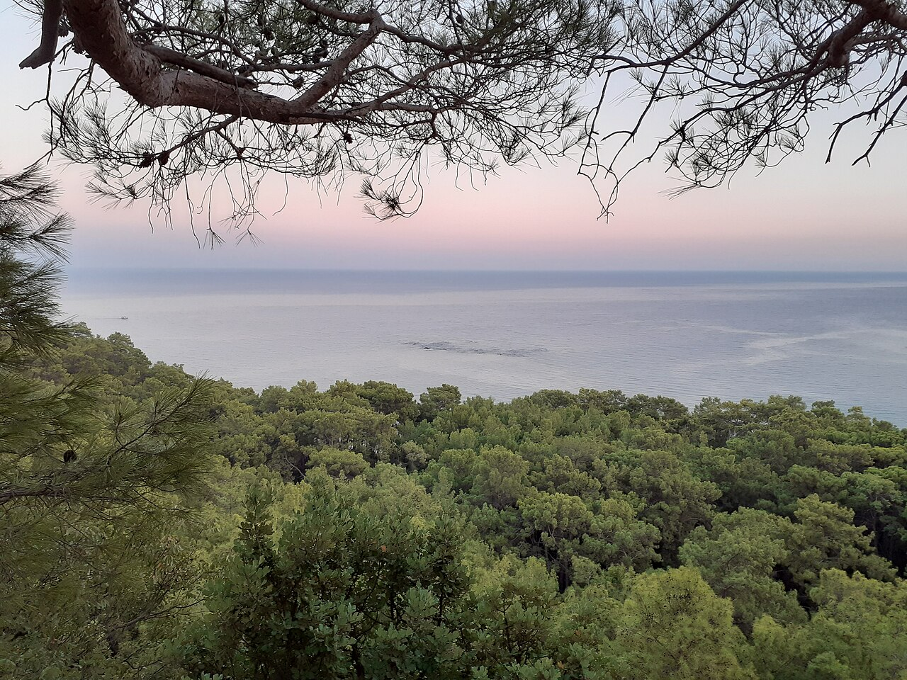
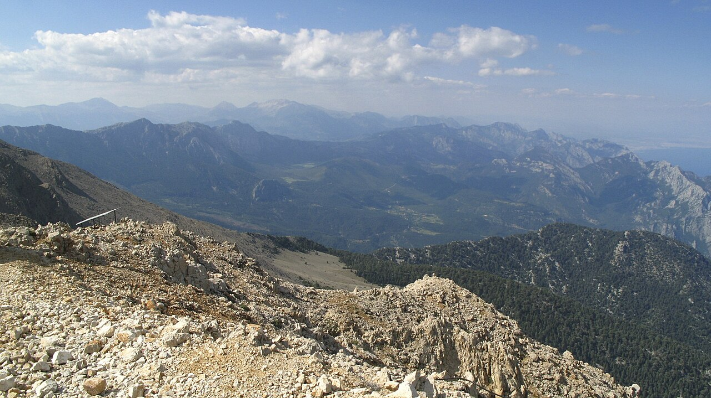
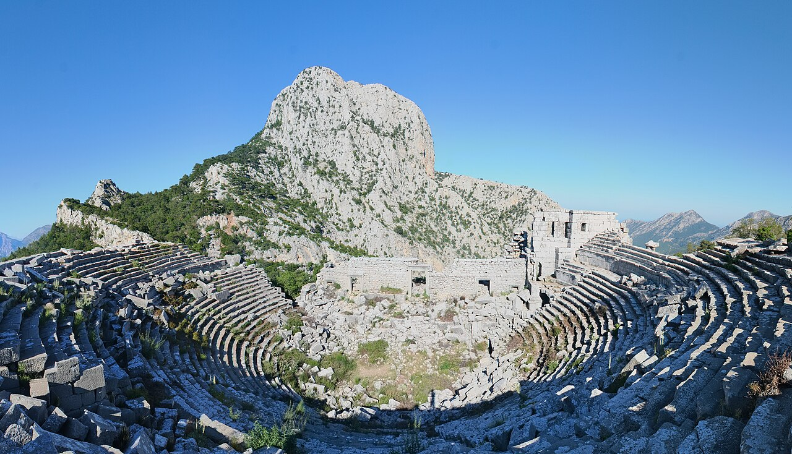

Sat 3 Oct
Phaselis + swim
2–5 km of ruins, pine forest and harbours. The best child-sized adventure.
Explore Phaselis →
Ten nights where the Beydağları drop into the Mediterranean: pine forest, Lycian ruins, warm October sea, child-sized expeditions and proper mountain days.
Travel on the 2nd and 12th. Nine full days between, based south of Kemer with a hire car.
The useful strip is south-west of Antalya, where the mountains reach the sea and the Lycian Way threads through Kemer, Phaselis, Tahtalı, Çıralı and Olympos.
Çamyuva / Kiriş is the compromise: easy family resort infrastructure, but already on the right side of Kemer for the walking.
Stay close enough to Kemer for restaurants and shops, but south enough that Phaselis and Tahtalı feel local. Çamyuva is the bullseye; Kiriş shifts slightly towards Antalya and Göynük.
2–5 km of ruins, pine forest and harbours. The best child-sized adventure.
Explore Phaselis →

A moderate 10–15 km Lycian Way mountain stage around Kuzdere / Göynük.
See hikes →
Deliberately empty. A holiday needs slack after a proper walking day.
Cable car to 2,365 m; add a short high-level wander if conditions cooperate.
Explore Tahtalı →
Adrasan → Musa Dağı → Olympos: the headline linear mountain-and-sea day.
Finish at Olympos →
Family-sized lower canyon, with serious Lycian Way terrain above.
Explore Göynük →Old-town culture or rough mountain archaeology depending on energy.
Explore Termessos →No checklist tourism. Return to the best beach, ruins or trail — or do nothing.
Several days use the eastern Lycian Way. Lycian Way route guide & GPS data ↗
Mountain, forest, Lycian Way and a finish at the Mediterranean.
Pine forest, upland settlements and ridge walking: almost exactly the requested scale.
A long adventure rather than a hard mountain day, with constant attractions.
Distance understates it: broken terrain and long descent make this the serious option.